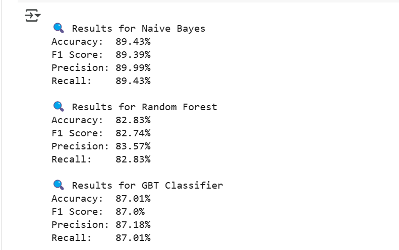

Suicide Intent Detection — Machine Learning + Flask
⚠️Disclaimer: This project is for educational and personal use only. It is not medically validated and should not be used as a diagnostic or clinical tool.
Introduction
This project is focused on building a machine learning-based text classification system to predict whether a message contains suicidal intent. It includes a trained model and a live web application using Flask that allows users to test predictions in real-time.
Dataset
I used the publicly available Suicide and Depression Detection Dataset from Kaggle, which is licensed under CC BY-SA 4.0. The dataset contains social media-like messages labeled as suicide or non-suicide.
Train/Dev/Test Split
The dataset was manually divided into:
- Train Set: 70%
- Dev Set: 15%
- Test Set: 15%
This helped in training, validating, and evaluating the model effectively. Below is a snapshot of how the split looks:
Preprocessing
- Lowercasing all text
- Removing special characters
- Stopword removal
- Label encoding (suicide → 1, non-suicide → 0)
- Train/dev set split
Technologies Used
- Python for scripting and ML pipeline
- scikit-learn + XGBoost for model training
- Flask for the web app
- joblib to save and load the model
- HTML/CSS for the user interface
Models Trained
Initially, I experimented with PySpark models:
- Naive Bayes (~89%)
- Gradient Boosted Trees (~86%)
- Random Forest (~82%)
Model Performance Comparison
Below is a snapshot of how the three trained models performed on the test dataset:

- Naive Bayes: Best overall performance (~89% accuracy)
- Gradient Boosted Trees: Solid performance with better precision
For final deployment, I chose a lightweight and portable solution:
CountVectorizer → TfidfTransformer → XGBClassifier
Evaluation on Dev Set
- Accuracy: 91.95%
- Precision: 92.03%
- Recall: 91.95%
- F1-score: 91.94%
Web App (Flask)
I created a simple web app using Flask where users can paste a message and view the prediction result.
Example Samples
" I cant take this anymore..." → suicide
"I’m finally feeling better" → non-suicide
Project Highlights
- Built a full end-to-end text classification system
- Explored model training in both PySpark and scikit-learn pipelines
- Implemented a functional and user-friendly interface using Flask
- Handled input processing, result display, and safe state management in the app
Project Learnings and Impact
- Designed and implemented a complete ML pipeline from preprocessing to model inference
- Gained hands-on experience with feature extraction using CountVectorizer and TF-IDF
- Built a production-ready interface using Flask to serve model predictions
- Applied machine learning techniques in a practical web application using Python and Flask
üöÄ What's Next?
In the future, I plan to:
- Visualize model confidence scores
- Deploy the app on Render or Hugging Face
- Explore transformer-based models for deeper context understanding